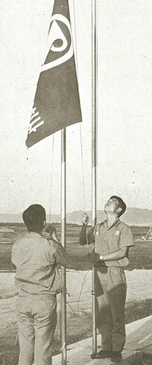
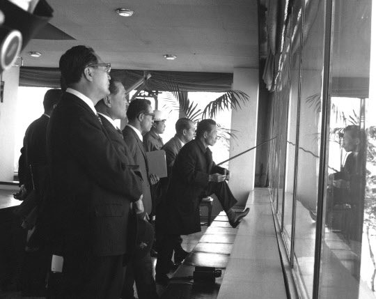
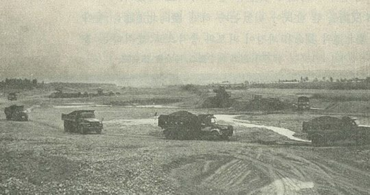

보도일 2014-11-24출처 조선일보 프리미엄조선 연재
1968년 11월 5일 박태준은 모처럼 반가운 소식을 들었다. 지난 7월 31일 KISA에 제안했던 GEP 수정 협상안이 지루한 협의를 거쳐 일괄 타결되었다는 것. 공장 일반배치의 변경에 소요되는 비용 88만5000 달러를 포항제철이 부담하는 대신, 회사의 가장 큰 부담이었던 제강공장 설계 변경, 가스홀더 공급, 균열로 3기 추가 등을 KISA가 무상으로 맡겠다는 합의가 그 핵심이었다. 이때 KISA 대표들은 마치 가난한 집에서 금가락지를 훔쳤다가 들통 나는 바람에 벌금형을 받은 것처럼 몹시 꿀꿀한 기분이었을 것이다.
포항종합제철주식회사 사장 박태준의 그 정당한 반기를 KISA는 얌전히 지켜보고만 있었을까? 아니면, 밑천도 기술도 경험도 없는 처지에 감히 겁도 없이 덤벼드는 작자를 적당히 골탕 먹이려 했을까? 신격호 롯데그룹 회장은 다음과 같이 회고했다.
<사태가 이렇게 되자(즉, 포항제철이 세세하게 따져들고 수정을 요구해오자) 자기들(즉, 코퍼스사)이 주도하고 있던 KISA의 해체를 운운하며 압력을 넣었고, 세계은행의 차관사업 타당성 조사단에서도 매우 회의적인 보고서를 작성하기에 이르렀다. 한국은 제철소를 건설할 능력도, 운영할 여력도 없다는 것이었다. 그 시점에서 과감하게 모든 사태에 대한 명확한 판단을 내린 박태준은 곧바로 나를 찾아왔던 것이었다.>
신격호의 회고에 나온 대로 KISA와 맞서는 박태준이 도쿄에서 신격호와 만난 때는 1969년 봄날이지만, 1968년 늦가을 워싱턴에서 고급정보의 하나처럼 새어나오는 소문도 박정희와 박태준을 긴장시키는 것이었다. 제너럴 일렉트릭사를 비롯한 미국의 강력한 전기기계 제작업체들이 미국 수출입은행의 자금을 빌려서 한국에 원자력발전소를 건설하기 위해 열을 올리고 있기 때문에 그들에 비해서는 군소업체인 코퍼스사 등이 뒤로 밀려나고 있고, 세계은행의 한국경제 보고서에는 종합제철에 대해 부정적인 견해가 포함되고….
한국정부나 박태준이 직접 눈으로 확인할 수 없는 곳에서 종합제철차관 제공에 대한 불길한 조짐이 일어난 가운데, 이제 정말 포항제철이 직면한 최대 고비는 ‘차관 조달’이었다. KISA의 5개국 8개사가 약속한 대로 차관만 조달해준다면! 그러나 차관 조달의 앞날은 어둡기만 했다. 세계은행의 보고서에 관한 소문이 구체적 사실로 등장한 것이었다.
한국의 종합제철 건설에 제공할 차관에 대해 결정적인 열쇠를 쥐고 있는 IBRD. 실무담당자인 영국인 자페가 1968년 한국경제 평가보고서에서, 한국의 제철공장은 엄청난 외환비용에 비추어 경제성이 의심스러우므로 이를 연기하고 노동·기술 집약적인 기계공업 개발을 우선해야 한다고 정리했다는 것. 더구나 KISA의 코퍼스사가 자금을 조달해야 하는 미국수출입은행도 그 견해에 동조하고 말았다. 참으로 웃기는 논리였다.
설령 그들의 훈수대로 기계공업 개발에 우선적으로 집중한다고 치자. 그렇다면 기계공업에서 거의 절대적 소재인 ‘철강’이 없는 판국에 무슨 재주로 기계공업을 성공한단 말인가? 그러니까 그 논리는 KISA가 한국정부와 포철에 엄청난 골탕이나 먹이고 완전히 발을 빼도 좋다는 면죄부나 보증서 같은 것이었다.
자페의 의견이 그대로 실행되고 박정희와 박태준이 다른 대안을 구하지 못하는 경우, 포항제철은 주민들의 보금자리만 파괴한 채 꼼짝없이 문을 닫아야 한다. 그때로부터 무려 20년쯤 지난 뒤에야 자페는 박태준 앞에서, “지금 그 보고서를 다시 쓴다고 해도 그대로 쓰겠지만, 단지 나는 포스코에 박태준이 있다는 사실을 모르고 간과했다”라고 털어놓게 되지만….

포항제철이 KISA와 GEP 수정안 협상에서 큰 성과를 올리긴 했으나 여전히 차관 도입의 앞길이 완전히 막혀 있는 11월 12일 아침 8시, 영일만 현장의 포항사무소장 박종태가 긴급히 서울 사무실의 박태준 사장을 찾았다. 방금 포항경찰서장의 연락을 받았는데, 금일 오전 11시에 대통령이 헬기로 포항 현장을 방문한다는 것.
박태준은 잠시 아찔했다. 대통령의 포항 현장 첫 방문. 하지만 현장은 부지조성공사와 항만준설공사가 한창 진행 중인 황량한 모래벌판이다. 건물이라곤 롬멜하우스가 전부다. 대통령을 안내할 곳이라곤 거기뿐이다. 그는 두 가지 지시를 내렸다. 보고드릴 차트를 준비할 것, 헬기가 안전하게 내릴 수 있도록 물을 뿌려 H자를 크게 표시할 것.
박태준은 군부대의 도움을 받았다. 민간항공기가 없는 시절에 포철 사장이 대통령보다 먼저 롬멜하우스에 도착할 유일한 방법은 대통령보다 먼저 서울을 이륙하는 것이었다. 군용 경비행기 세스나를 얻어 타고 포항 해병사단에 내린 그는 곧바로 보고를 준비했다.
박태준은 대통령을 롬멜하우스 2층으로 정중히 모셨다. 박정희의 표정이 어두웠다. 폐허의 모래벌판에 충격을 받은 모습이었다. 장교 시절부터 빈틈없는 브리핑으로 명성이 높았던 박태준의 보고가 ‘외자 조달 문제’로 끝을 맺었다. 박정희는 침묵에 잠겨 있었다.
“보고가 끝났습니다.”
“응, 그래.”
박정희가 무겁게 몸을 일으키고 천천히 걸음을 옮겨 창턱에 한 발을 올려놓았다. 그 옆에 박태준이 섰다. 초가집을 헐어낸 자리, 준설선이 바닷물과 모래를 함께 퍼 올린 늪과 비슷한 자리, 여기저기 찌꺼기를 태우는 곳에서 꾸역꾸역 피어오르는 연기, 이따금씩 자욱하게 모래먼지를 일으키는 드센 바닷바람…. 그 을씨년스런 풍경은 치열한 전투 직후의 사막 같았다.

모래바람이 유리창을 때렸다. 문득 박정희가 쓸쓸한 혼잣말을 했다.
“이거, 남의 집 다 헐어놓고 제철소가 되기는 되는 건가.”
순간, 박태준은 모골이 송연했다.
KISA가 약속한 차관 도입이 막혀 있는 상황에서 불쑥 영일만으로 날아와 가슴 저 깊은 곳에 가둬놓았던 탄식 같은 독백으로 박태준의 영혼에 오싹한 소름이 끼치게 한 박정희. 이 장면의 박정희는 ‘빈곤’을 동시대인이 이겨내야 하는 ‘악(惡)’으로 규정하여 우리는 반드시 이길 수 있고 기필코 이겨야 한다고 확신하는 지도자였다. 또한 그것을 위하여 ‘민주주의의 일정한 유보’가 필요하다고 판단하는 지도자였다.
그러므로 1968년 11월 포항제철 롬멜하우스에서 박정희가 무심결에 박태준의 귀에도 들릴 만한 목소리로 쓸쓸히 내뱉은 그 탄식, 그 독백에는 산업화에 맹진하는 시대의 모순이 담겨 있었을 것이다. ‘경제 개발’과 ‘민주주의 성장’이 역사의 동일한 무대에서 상충하는 모순….
박정희가 처음 영일만을 다녀간 뒤 박태준은 세모 분위기를 타는 서울에서 KISA 대표단과 만나 ‘포항종합제철 사장’으로서 추가협정서에 서명을 했다. 연산 조강 60만 톤 규모 종합제철공장 건설을 위한 최종 차관 규모와 향후 4년 간 이자조정 폭(8%)을 합의한 것이었다. 그렇게 그는 잘못된 조항들을 하나씩 뜯어고치고 있었으나 어쩐지 만년필을 거머쥔 손에 힘이 쏠리지 않는 것 같았다.

여든 살이 넘은 뒤에도 박태준은 1968년 11월 롬멜하우스의 그 장면을 엊그제 일처럼 생생히 기억하며 이렇게 회고했다.
“모골이 송연해진다는 말이 있지 않소? 그 말이 딱 맞을 거요. 박정희 대통령이 그렇게 낙심하는 모습을 나는 처음 봤던 거요. 순간적으로도 나는 각하의 그 마음을 충분히 이해할 수 있었소.
KISA 말이요, 그놈들하고 우리 관료들이 얼마나 오래 협상을 끌었소? 그때가 벌써 만 2년은 됐을 텐데, 한다, 하자, 됐다, 하자, 이런 말만 반복했지 주민들 철거시키고 부지정비작업을 하고 있는 포철 현장에 각하가 처음 방문한 그날 그 시간까지, 실제로는 아무런 진전이 없었던 거요. 그런 판국으로 꼬여 있던 68년 8월에는 각하의 지시를 받은 우리 장관들이 한일각료회의에 가서 종합제철 차관에 협력해 달라고 부탁했지만, 일본정부가 퇴짜를 놓았단 말이오.
그러니 어떤 심정이었겠소? 나도 답답해 죽을 지경이었는데, 각하까지 그렇게 낙심하시는 모습을 보면서 내 마음은 얼마나 터질 지경이었겠소? 그래도 각하하고 나하고 둘이서만 따로 있게 된 시간에는 내가 따지듯이 말했어요. 각하, 저도 여기서 어려운 투쟁을 벌이고 있는데 각하께서 그런 낙담을 하시면 저나 우리 직원들은 힘이 더 빠지지 않습니까? 이랬더니, 아, 내가 그랬나? 이러시더군.
그러니까 각하도 KISA 놈들 때문에 너무 답답하시니까 순간적으로 자신도 모르게 그런 낙담을 하셨던 거지. 그때 우리는 정말 캄캄한 밤길에 그냥 버려진 느낌이었던 거지….”